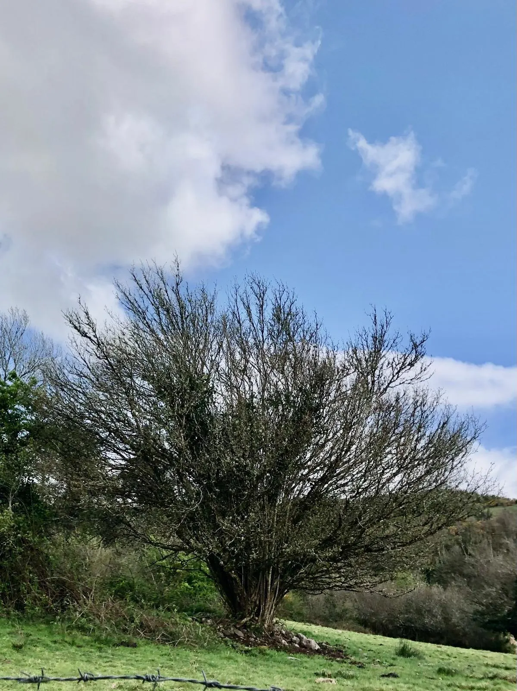

Drum
Drum in Irish “An Droim” meaning ridge or long hill is 686.14 acres or 277.67 hectares in size and is in the Electoral division of Marblehill. Drum is locally pronounced and spelled Drim.
In the 1841 census there were 206 people, 35 inhabited and 4 uninhabited houses, and in the 1851 census, after the famine, the population had fallen to 95 people and 16 houses.
The Burkes of Marble Hill were the landlords of the townland until the early 1900s. There is a good example of a lime kiln on the Drim road, and a children’s burial ground known locally as The Lisheen.

In the recent past there were at least two shops in Drum. There was also a forge belonging to the Darcys, a tailor and a shoemaker at Cleary’s, a carpenter named Flynn, and a cotton weaver.
Drum borders Allykeolaun, Cullenagh, Knockaundarragh, Knockmoyle East, Kylenagappa and Reynabrone.
Map
Placenames
| Name | Type | Notes |
|---|---|---|
| Béal Jerrig | field | Probably “Béal Dearg”. |
| Madden’s Walls | man-made feature | |
| Kyle na Duchaigh | wood | |
| Begley’s Garden’s | field | |
| The Lisheen | graveyard, cemetary, burial ground | Known locally as “The Lisheen” but a story in the schools collection refers to it as “Loisín Glas”: https://www.duchas.ie/en/cbes/4583316/4579046/4588048 We heard a story about a man from Drim that died during the famine and his wife wheeled him out to the Lisheen in the wheelbarrow and buried him there. Then she went back home and died herself. |
| The Riasc | field | |
| Pinna | field | This was pronounced as both “Pinna” and “Penna”. |
| The Triangle Field | field | |
| The Lochán | field | Pronounced “Luhhawn”. |
| The Moonchoge | field | |
| Réidh na Maldún | field | Pronounced “Ray na Moldoon”. |
| The Lochán | field | |
| Darcy’s Field | field | |
| The Black Ground | field | |
| Móin Bhuí | field | Pronounced “Mown wee”. |
| Culyeen na Hown | field | Probably “Coillín na hAbhann”. |
| Pairc Garbh | field | |
| Apple Garden | field | |
| The Haggart | field | |
| Glans | field | Pronounced like Irish “glan” + s. |
| The Calf Garden | field | |
| The Rush Field | field | |
| Pollín | hollow | Pronounced “Powleen”. This is a drop or a hollow in the field. |
| Poll Uisce | field | Pronounced “Powl Ishka”. |
| The Hazel | field | |
| The High Field | field |
Houses
| Name | Notes |
|---|---|
| Shiel’s House | Mike Shiel known as “Mickeen”. |
| Darcy’s House | |
| Moran’s House | |
| Gilchreest’s House | |
| Riordan’s House | |
| Murphy’s House | |
| Mary Ellen Fahy’s House | |
| Tim Fahy’s House | |
| Donohoe’s House | |
| O’Donnell’s House | |
| Cleary’s House | Then Sheanan’s. |
| Moran’s House | |
| Tuohy’s House | |
| Flynn’s House |
Buildings
| Name | Notes |
|---|---|
| Riordan’s Store | |
| Riordan’s Shop | |
| Burke’s Shop | The parafin oil used to burn Marblehill House is supposed to have come from here. |
| Darcy’s Forge |